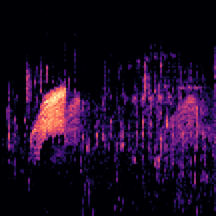

We want to classify sounds of different kinds of birds. We used data from this website
The original whole dataset is too big so we just used a portion of it. The original dataset has recordings of various kinds of birds from many different countries. We just used 21 classes of bird sounds from 2 countries: Poland and Germany.
The problem is that given a sound recording of a bird from those 21 classes, we want to classify which kind of bird it is.
Our approach is first converting sound files to images, then training a CNN net to classify those images, and using test dataset to test our model. We finally achieved about 74% test accuracy.
Video goes here! This is a short video presentation of our work.
We thought this problem is very interesting because both of us like birds and nature and since there is already gender-classification and person-classification neural networks, we thought we could try to apply similar approach to birds. We think this problem is worth solving because if we have a good algorithm to classify different kinds of birds based on their sounds, it can benefit bird research by helping monitor specific species.
We did some research about how to classify species based on sounds, and found that we could convert sounds to images and apply what we have learned in this class to classify them.
We have found a few papers about bird sound classification and detection. Here are the links:
We also found an online challenge of bird audio detection and the results. Quite a few teams participating in this challenge got a score of almost 90%, which is a strong score for this difficult challenge.
From what we have found online, some people are doing bird sound detection to help monitor systems detect when there are birds existing during a time period; and some other people are doing bird sound classification.
For bird sound dectection, we think that the current result is pretty good since most teams can achieve 90% on that challenge. For bird sound classification, we haven't found many papers or challenges about it, and the results discussed in the second paper were not very good. Thus, we thought there is still much space for this problem.
Also, in this paper, they talked about challenges in bird sound recognition, some important issues are:
We used a portion of data from xeno-canto.org website with 21 classes of birds and recordings from 2 countries, and finally got 2849 mp3 recordings.
We downloaded bird sound files from the www.xeno-canto.org archives with metadata. It downloaded all the files found with the search terms (bird kind and country) into subdirectory with corresponding json files. Then, the program found all the files ending with .mp3 in the directory. Then, we preprocessed those recordings by cutting each of them into 4-5s pieces (since recordings are of different lengths) and transfer each of those pieces to a melspectrogram. We got 66061 images and we separated them to training and test sets, 80% and 20%, and got 52840 images for training and 13221 images for test.
You can select each kind of bird and listen to the corresponding recording and a sample converted melspectrogram.
Bird Image:
Converted Melspectrogram:
Bird Audio:
After converting all the recordings to melspectrograms, we can apply what we have learned about image classification in this class.
We used a similar CNN net to CifarNet in hw1, but a little shallower. We used three convolutional layers, and after each convolutional layer, we added a batch norm layer and a RELU activation layer. We also added a MaxPool layer after the first convolutional layer. Finally we added three fully connected layers. We used a batch size = 128, epoch = 20, learning rate = 0.001, momentum = 0.95, and weight decay = 0.0005.
The network architecture is shown as the image below:
The data download and preprocessing parts are from preexisting work, from this github , and connecting to google drive, saving data and models to google drive, fetching pre-results from google drive, defining the neural network, training and testing using corresponding data and final plotting were implemented for the project, some of them were from homework notebooks.
The colab notebook is linked here!
We trained the net with the whole training set for 20 epochs and calculate the test accuracy using test set for each epoch. We finally plotted three plots: training loss, test loss and test accuracy. The plots are shown below:
We could achieve about 70% test accuracy. Since we have got a relatively good test accuracy, we think our approach was correct. Since we already have the technique to classify images, it makes sense to convert sound files to images first, then use what we already know to do the classification. We used a CNN net similar to CifarNet in hw1 since the CifarNet also performs image classification, and for this project, we also wanted to do (converted) image classification, so we think our approach to using a similar neural network was correct.
We didn't do ablation studies or use different methods, since our initial try to using CNN net worked pretty well. By comparing to the results in this research paper , we think we got a better performance than that in this paper. But this doesn't mean that our neural network is better than those used in this paper, because we used different dataset. Our dataset only has 21 classes and each recording is "clear" without any noise (city noise or other birds). From this paper, we can see that Inception model is better than ResNet18 and ResNet34 no matter we used cmAP or rmAP scores.
Currently with our clean and well preprocessed data, our neural network performs well and can achieve a high test accuracy. However, if the data becomes more noisy with much background noise, or each recording is not just a single bird singing (multiple birds sing at the same time), or with more classes of birds, we think our model may have a drop in performance and test accuracy. Currently, our approach does not contain parts that handle noise, and we can just classify one kind of bird for each recording. Thus, there are some limitations in our current approach, and we think we can improve our approach to handle those problems, so that our approach can generalize to various dataset. By the way, it took much longer time than we expected to train the neural net, and preprocessing the data.
We learned how to transform a problem we have never seen and learned about to a problem that we have learned how to handle. We haven't learned how to classify voice, but we have learned how to classify images. Thus, we can first convert sounds to images and apply what we know. We learned how to convert voice to images, adapt neural nets that we already have and are known to perform well to other problems. We also learned how to research for helpful resources online and compare our results to those discussed in those papers.